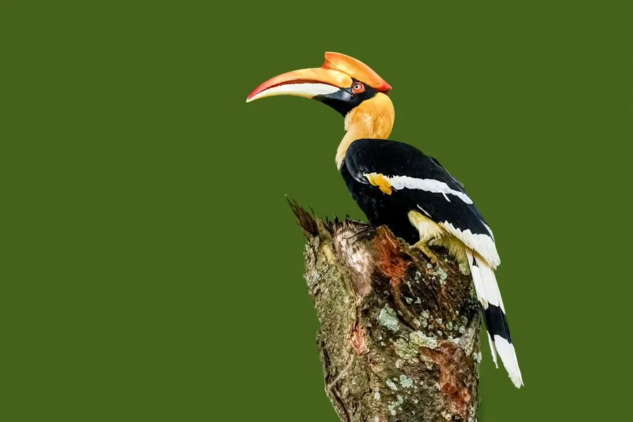

鸟类 · 动物界
双角犀鸟 Buceros bicornis

亚洲最大的犀鸟之一，黑白色羽衣配巨大的黄黑盔突，盔突上缘呈双脊状。雌鸟封巢育雏，仅留小孔由雄鸟送食，是雨林旗舰物种。
- 分类
- 门脊索动物门纲鸟纲目犀鸟目科犀鸟科属犀鸟属
- 栖息环境
- 热带常绿雨林、季雨林与林缘，需要高大老龄乔木提供树洞和结果植物。
- 地理分布
- 南亚、东南亚至中国云南南部；中国境内种群数量稀少。
- 保护级别
- IUCN 红色名录列为易危（VU）；中国国家一级保护野生动物，列入 CITES 附录一。
物种志
双角犀鸟体长约九十五至一百三十厘米，翼展一百四十六至一百七十八厘米，体重二千五百至四千克。通体黑白分明：头颈、胸腹和尾下覆羽黑色，尾羽白色而具黑色横带，翼上覆羽黑色，飞羽具白色端斑。喙巨大，呈淡黄色，上方的盔突同样巨大，前缘黑色，上缘形成两道脊状隆起，故称“双角”。眼周裸皮橙红，虹膜橙红，脚灰黑。
它栖息于热带常绿雨林，尤其依赖高大结果乔木，主食榕树果等果实，也捕食小型脊椎动物。繁殖习性独特：雌鸟进入树洞后，用粪便和木屑把洞口封住，仅留一条窄缝，由雄鸟持续送来食物；雌鸟在洞内孵卵、换羽，雏鸟长出羽毛后才破洞而出，每窝通常一至二只。双角犀鸟分布于南亚至东南亚，中国云南南部有分布。因雨林砍伐和盗猎，种群下降，被列为易危物种、国家一级保护动物。
形态与习性
- 体长95–130 厘米
- 翼展146–178 厘米
- 体重2500–4000 克
- 食性榕树果等果实为主，兼食小动物
- 繁殖树洞封巢育雏，每窝 1–2 只
- 保护级别国家一级；IUCN 易危；CITES 附录一
趣味知识
- 雌鸟把自己封在树洞里育雏，只留一条送食的窄缝。
- 飞行时翅膀扇动声沉重，数百米外都能听见。
- 寿命很长，野外个体可活到五十岁左右。